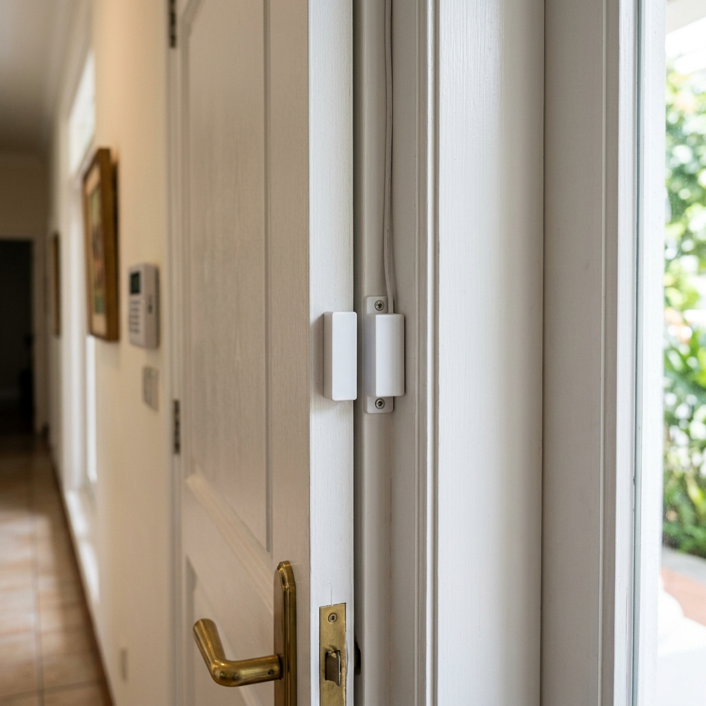
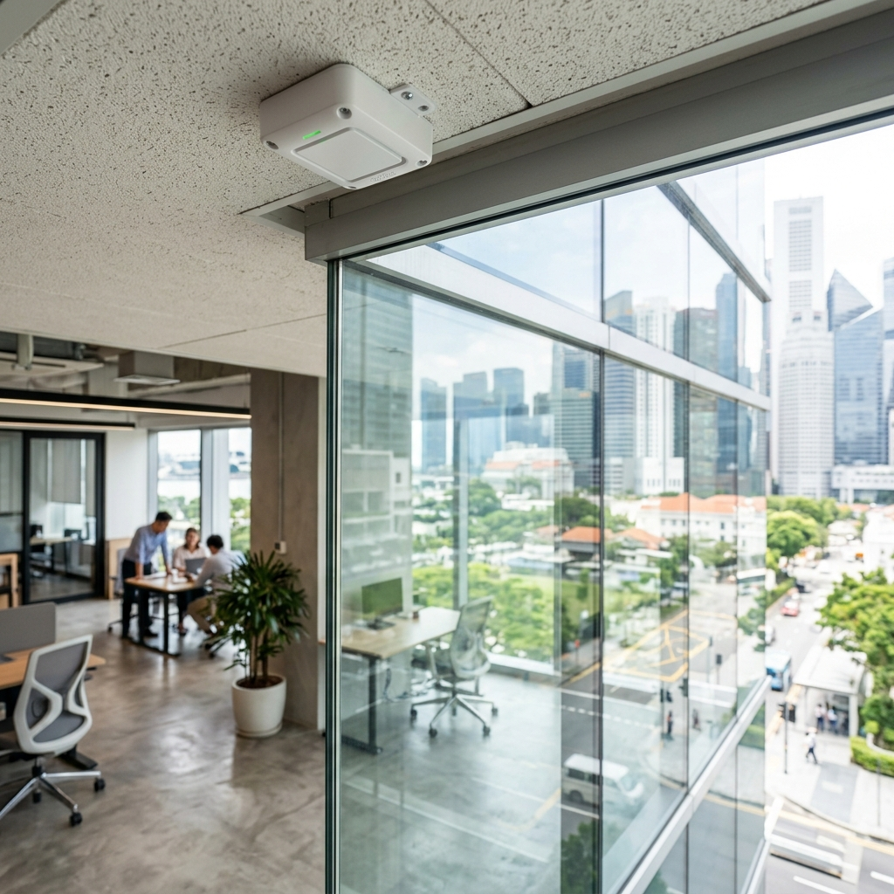

1. Why detector selection matters more than panel selection
Most conversations about alarm systems focus on the panel — which brand, how many zones, what communication options. Detector selection gets far less attention. This is backwards.
The panel is the administrator. The detectors are the system. If the detectors are wrong for the environment — a standard PIR in a space with direct sun exposure, a single-beam photobeam in an area frequented by cats, a glass break detector positioned too far from the glass it is supposed to monitor — the system will false-alarm, get switched off, and provide no protection at all.
Getting the detector selection right for each zone is what separates a system that works reliably for ten years from one that becomes a problem within six months.
2. Magnetic door and window contacts
The most fundamental and reliable detector in any alarm system. A magnet mounted on the moving part of the door or window, a reed switch mounted on the fixed frame. When they separate — the door or window opens — the circuit breaks and the zone triggers.
No moving parts. No calibration. No environmental sensitivity. Correctly installed, a magnetic contact will outlast most other components in the system.
They come in surface-mount and flush-mount variants. Surface-mount contacts are visible on the door frame — easier to install, more easily spotted by anyone who knows what they are looking for. Flush-mount contacts are concealed within the door or frame — cleaner aesthetically and harder to tamper with.
For doors with metal frames, recessed contacts or contacts with separate magnets are specified to avoid interference from the metal affecting the reed switch sensitivity.

3. PIR motion sensors
Passive Infrared sensors are the standard interior detector for most residential and small commercial alarm installations in Singapore. They detect the infrared radiation emitted by a moving human body — specifically the change in heat signature as a person moves through the sensor's detection field, not a static heat source.
The key word is passive — the PIR does not emit anything. It only receives. This distinguishes it from active sensors like microwave or ultrasonic, which both emit and receive.
Standard PIR coverage is a cone of approximately 90 degrees horizontal by 90 degrees vertical, to a range of 10 to 15 metres. Position determines coverage: mounted in a corner at ceiling height, one PIR can cover an entire average-sized room.
Where PIR performs well: Living rooms, corridors, stairways, reception areas — any interior space with stable ambient temperature and no large pets.
Where PIR causes problems:
- Spaces with direct sunlight hitting the sensor — the rapid temperature change can trigger a false alarm
- Rooms where air-conditioning vents blow directly at the sensor — similar effect
- Areas where small animals move — a PIR will typically not trigger for a cat on the floor, but a dog at waist height may well register
- Spaces with large windows facing west — afternoon sun heating the floor can create enough thermal movement to trigger
PIR false alarms are almost always an installation problem, not a detector problem. The sensor was positioned without accounting for sun angles, airflow patterns, or pet behaviour. A site visit at different times of day before installation is worth doing for any space where false alarms are a concern.
4. Dual-technology sensors
A dual-technology sensor combines PIR with microwave detection in a single unit. The microwave element sends out radio frequency pulses and measures changes in the reflected signal to detect movement — similar in principle to how a radar speed gun works.
The critical difference from a standard PIR: both technologies must trigger simultaneously for the zone to activate. A thermal change alone — sunlight, air-conditioning — does not trigger the alarm because the microwave element has not detected corresponding movement. A microwave anomaly alone — vibration, RF interference — does not trigger because the PIR has not detected a thermal change.
The result is a significantly lower false alarm rate in challenging environments at a modest cost premium over standard PIR.
Where dual-technology is the correct specification:
- Warehouses and industrial premises with high thermal variation
- Commercial kitchens
- Spaces with large windows and sun exposure
- Any environment where a standard PIR has previously caused persistent false alarms
- Schools and large open-plan offices where the space is difficult to partition cleanly into zones
5. Perimeter photobeam sensors
A photobeam sensor consists of a transmitter and a receiver, installed facing each other across an open area. The transmitter emits an infrared beam — invisible to the human eye — and the receiver detects it continuously. When something crosses the beam, the receiver signal is interrupted and the zone triggers.
Photobeam sensors are used for large outdoor or semi-outdoor perimeter zones: open car parks, rooftop areas, loading bays, perimeter walls, and large industrial compounds. They protect voids that would require an impractical number of PIR sensors to cover.
To reduce false alarms from animals and debris, modern photobeams use dual-beam or quad-beam technology — the alarm triggers only when multiple beams are simultaneously interrupted. A cat crossing one beam in a four-beam stack does not trigger the alarm. A person crossing all four at once does.
Installation requires clear line of sight between transmitter and receiver, with no obstructions in the beam path. Trees, vegetation, and structures that grow or shift over time can obstruct the beam — this is a maintenance consideration for outdoor installations.
6. Glass break sensors
Glass break sensors are acoustic detectors tuned to the specific frequency range produced by breaking glass — typically between 4 kHz and 8 kHz. They are mounted on the wall or ceiling near glazed areas and trigger when they detect that characteristic sound signature.
Effective range is typically 6 to 9 metres. Beyond that range, the sensor may not reliably detect a break, particularly if there are soft furnishings or partitions absorbing the sound.
Positioning matters. Too close to the glass and the sensor may trigger from other impacts — heavy objects dropped nearby, loud bangs from adjacent spaces. Too far away and it misses quieter breaks. Position the sensor between 1.5 and 6 metres from the glass it is protecting, with clear acoustic line of sight.
Glass break sensors are most useful where the glass panels are too large or too numerous to run magnetic contacts on each pane — shopfronts, large curtain wall systems, floor-to-ceiling glazing in commercial spaces.

7. Panic buttons, vibration sensors, and fire detectors
Panic buttons are hardwired or wireless buttons that trigger the alarm immediately, regardless of arm state. They are emergency zone devices — they cannot be bypassed and they activate whether the system is armed or not. Hardwired panic buttons are installed at fixed positions: reception desks, cashier counters, master bedroom nightstands. Wireless variants — such as the AJAX Space Control or dedicated panic fobs — allow the user to carry the trigger on their person.
Vibration sensors detect mechanical vibration transmitted through solid surfaces. They are used to protect high-security physical assets: safes, vaults, ATMs, server cabinets. A drilling attack on a safe generates a specific vibration signature that the sensor recognises and triggers a zone.
Fire detectors are life-safety devices integrated into the alarm panel as emergency zones. Smoke detectors are ceiling-mounted in corridors and sleeping areas. Heat detectors are used in kitchens where smoke detectors would produce too many cooking-related false alarms. Carbon monoxide detectors protect spaces with gas appliances or vehicle access. All of these trigger the alarm in the same way — immediately, regardless of arm state — because they are life-safety events.
The most expensive detector in the wrong location is worse than a basic detector correctly placed. We always do a site walk before specifying detectors — checking sun angles at different times of day, noting HVAC positions, checking for pets, looking at the glazing. Twenty minutes of assessment before installation saves months of false alarm problems after it. If your current system false-alarms frequently, the fix is almost certainly a repositioning or upgrade of specific detectors, not a wholesale system replacement.

About the Author
Ler Wee Meng is the Founder and CEO of Securevision. He holds a Bachelor of Engineering (Electrical and Electronic) from the National University of Singapore and a Bachelor of Laws from the University of London. With over 37 years of experience in the security industry, he has personally overseen the design and implementation of security systems for more than 1,000 sites across Singapore, ranging from Good Class Bungalows (GCBs) and large-scale condominiums to industrial complexes and institutional facilities.
He is the principal architect of the Securevision SECURE™ Framework and spearheaded the development of the VESTA integration platform. His direct field experience across thousands of residential units ensures that every system designed by Securevision is practical, maintainable, and built to withstand the unique technical challenges of Singapore's climate and regulatory landscape. His engineering-first approach continues to define the standards for intelligent security integration in Singapore.